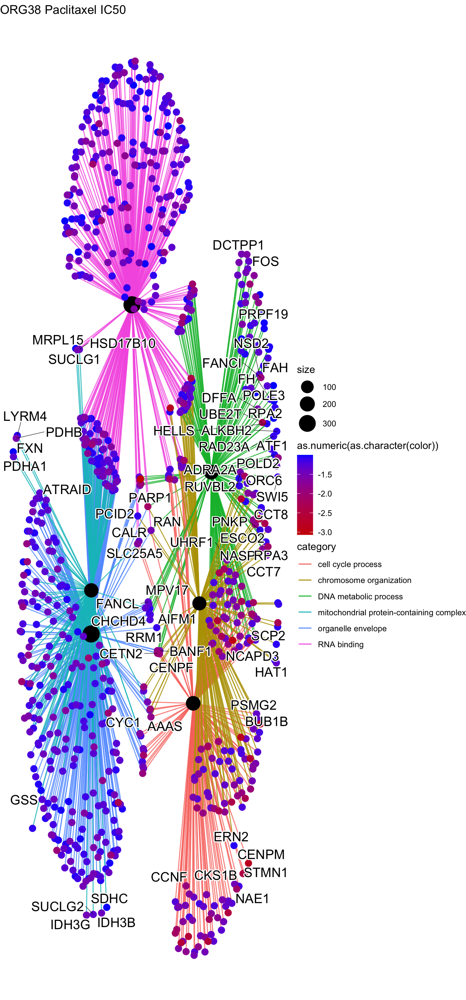
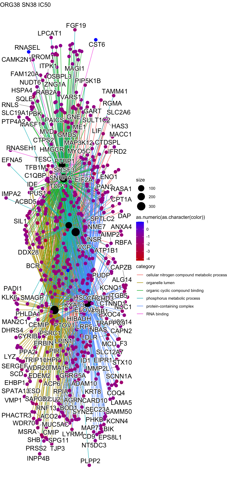
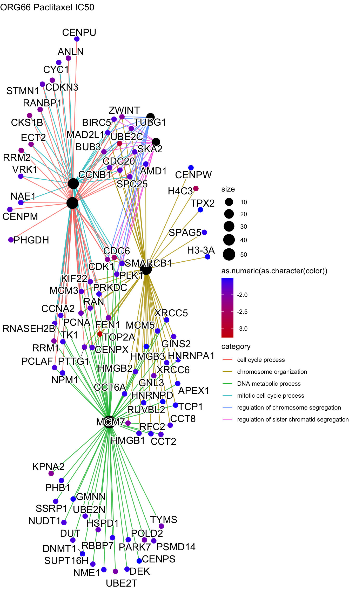

Last updated: 2024-10-11
Checks: 5 2
Knit directory: MACseq-SPLINTR-Project/
This reproducible R Markdown analysis was created with workflowr (version 1.7.1). The Checks tab describes the reproducibility checks that were applied when the results were created. The Past versions tab lists the development history.
The R Markdown file has unstaged changes. To know which version of
the R Markdown file created these results, you’ll want to first commit
it to the Git repo. If you’re still working on the analysis, you can
ignore this warning. When you’re finished, you can run
wflow_publish to commit the R Markdown file and build the
HTML.
Great job! The global environment was empty. Objects defined in the global environment can affect the analysis in your R Markdown file in unknown ways. For reproduciblity it’s best to always run the code in an empty environment.
The command set.seed(20240802) was run prior to running
the code in the R Markdown file. Setting a seed ensures that any results
that rely on randomness, e.g. subsampling or permutations, are
reproducible.
Great job! Recording the operating system, R version, and package versions is critical for reproducibility.
Nice! There were no cached chunks for this analysis, so you can be confident that you successfully produced the results during this run.
Using absolute paths to the files within your workflowr project makes it difficult for you and others to run your code on a different machine. Change the absolute path(s) below to the suggested relative path(s) to make your code more reproducible.
| absolute | relative |
|---|---|
| /Users/dalvinikita/Documents/GitHub/MACseq-SPLINTR-Project/ | . |
| /Users/dalvinikita/Documents/GitHub/MACseq-SPLINTR-Project/data/rObjects/ORG38/PAC_50_48H_gse.rds | data/rObjects/ORG38/PAC_50_48H_gse.rds |
| /Users/dalvinikita/Documents/GitHub/MACseq-SPLINTR-Project/data/rObjects/ORG38/SN38_50_48H_gse.rds | data/rObjects/ORG38/SN38_50_48H_gse.rds |
| /Users/dalvinikita/Documents/GitHub/MACseq-SPLINTR-Project/data/rObjects/ORG49/PAC_50_48H_gse.rds | data/rObjects/ORG49/PAC_50_48H_gse.rds |
| /Users/dalvinikita/Documents/GitHub/MACseq-SPLINTR-Project/data/rObjects/ORG49/SN38_50_48H_gse.rds | data/rObjects/ORG49/SN38_50_48H_gse.rds |
| /Users/dalvinikita/Documents/GitHub/MACseq-SPLINTR-Project/data/rObjects/ORG66/PAC_50_48H_gse.rds | data/rObjects/ORG66/PAC_50_48H_gse.rds |
| /Users/dalvinikita/Documents/GitHub/MACseq-SPLINTR-Project/data/rObjects/ORG66/SN38_50_48H_gse.rds | data/rObjects/ORG66/SN38_50_48H_gse.rds |
| /Users/dalvinikita/Documents/GitHub/MACseq-SPLINTR-Project/data/DEgenes/ORG38/PAC_IC50_48H.txt | data/DEgenes/ORG38/PAC_IC50_48H.txt |
| /Users/dalvinikita/Documents/GitHub/MACseq-SPLINTR-Project/data/DEgenes/ORG38/SN38_IC50_48H.txt | data/DEgenes/ORG38/SN38_IC50_48H.txt |
| /Users/dalvinikita/Documents/GitHub/MACseq-SPLINTR-Project/data/DEgenes/ORG49/PAC_IC50_48H.txt | data/DEgenes/ORG49/PAC_IC50_48H.txt |
| /Users/dalvinikita/Documents/GitHub/MACseq-SPLINTR-Project/data/DEgenes/ORG49/SN38_IC50_48H.txt | data/DEgenes/ORG49/SN38_IC50_48H.txt |
| /Users/dalvinikita/Documents/GitHub/MACseq-SPLINTR-Project/data/DEgenes/ORG66/PAC_IC50_48H.txt | data/DEgenes/ORG66/PAC_IC50_48H.txt |
| /Users/dalvinikita/Documents/GitHub/MACseq-SPLINTR-Project/data/DEgenes/ORG66/SN38_IC50_48H.txt | data/DEgenes/ORG66/SN38_IC50_48H.txt |
Great! You are using Git for version control. Tracking code development and connecting the code version to the results is critical for reproducibility.
The results in this page were generated with repository version d67e4ed. See the Past versions tab to see a history of the changes made to the R Markdown and HTML files.
Note that you need to be careful to ensure that all relevant files for
the analysis have been committed to Git prior to generating the results
(you can use wflow_publish or
wflow_git_commit). workflowr only checks the R Markdown
file, but you know if there are other scripts or data files that it
depends on. Below is the status of the Git repository when the results
were generated:
Ignored files:
Ignored: .DS_Store
Ignored: .Rhistory
Ignored: .Rproj.user/
Ignored: data/.DS_Store
Ignored: data/DEgenes/
Ignored: data/enrichedPathways/
Ignored: data/images/
Ignored: data/rObjects/
Unstaged changes:
Modified: analysis/DGE_VPathwaysEnrichment.Rmd
Modified: analysis/differential_expression_24H.Rmd
Note that any generated files, e.g. HTML, png, CSS, etc., are not included in this status report because it is ok for generated content to have uncommitted changes.
These are the previous versions of the repository in which changes were
made to the R Markdown
(analysis/DGE_VPathwaysEnrichment.Rmd) and HTML
(docs/DGE_VPathwaysEnrichment.html) files. If you’ve
configured a remote Git repository (see ?wflow_git_remote),
click on the hyperlinks in the table below to view the files as they
were in that past version.
| File | Version | Author | Date | Message |
|---|---|---|---|---|
| Rmd | d67e4ed | kitadalvi | 2024-10-11 | updated plots |
| html | d67e4ed | kitadalvi | 2024-10-11 | updated plots |
| Rmd | 1e38a38 | kitadalvi | 2024-10-02 | updated CNET plots |
| html | 1e38a38 | kitadalvi | 2024-10-02 | updated CNET plots |
| Rmd | e49d6f4 | kitadalvi | 2024-09-26 | added cnet plots for mac seq |
| html | e49d6f4 | kitadalvi | 2024-09-26 | added cnet plots for mac seq |
| Rmd | d5873f0 | kitadalvi | 2024-09-12 | Plate 1 SLINTR analysis added |
| html | d5873f0 | kitadalvi | 2024-09-12 | Plate 1 SLINTR analysis added |
| Rmd | cbf5e6f | kitadalvi | 2024-09-05 | 24H DGE Analysis |
| html | cbf5e6f | kitadalvi | 2024-09-05 | 24H DGE Analysis |
knitr::opts_chunk$set(
echo = FALSE,
message = FALSE,
warning = FALSE
)
library(tidyverse)── Attaching core tidyverse packages ──────────────────────── tidyverse 2.0.0 ──
✔ dplyr 1.1.4 ✔ readr 2.1.5
✔ forcats 1.0.0 ✔ stringr 1.5.1
✔ ggplot2 3.5.1 ✔ tibble 3.2.1
✔ lubridate 1.9.3 ✔ tidyr 1.3.1
✔ purrr 1.0.2
── Conflicts ────────────────────────────────────────── tidyverse_conflicts() ──
✖ dplyr::filter() masks stats::filter()
✖ dplyr::lag() masks stats::lag()
ℹ Use the conflicted package (<http://conflicted.r-lib.org/>) to force all conflicts to become errorslibrary(dplyr)
library(DOSE)Warning: package 'DOSE' was built under R version 4.4.1
DOSE v3.31.2 For help: https://yulab-smu.top/biomedical-knowledge-mining-book/
If you use DOSE in published research, please cite:
Guangchuang Yu, Li-Gen Wang, Guang-Rong Yan, Qing-Yu He. DOSE: an R/Bioconductor package for Disease Ontology Semantic and Enrichment analysis. Bioinformatics 2015, 31(4):608-609library(enrichplot)
library(clusterProfiler)clusterProfiler v4.13.0 For help: https://yulab-smu.top/biomedical-knowledge-mining-book/
If you use clusterProfiler in published research, please cite:
T Wu, E Hu, S Xu, M Chen, P Guo, Z Dai, T Feng, L Zhou, W Tang, L Zhan, X Fu, S Liu, X Bo, and G Yu. clusterProfiler 4.0: A universal enrichment tool for interpreting omics data. The Innovation. 2021, 2(3):100141
Attaching package: 'clusterProfiler'
The following object is masked from 'package:purrr':
simplify
The following object is masked from 'package:stats':
filterlibrary(org.Hs.eg.db)Loading required package: AnnotationDbi
Loading required package: stats4
Loading required package: BiocGenerics
Attaching package: 'BiocGenerics'
The following objects are masked from 'package:lubridate':
intersect, setdiff, union
The following objects are masked from 'package:dplyr':
combine, intersect, setdiff, union
The following objects are masked from 'package:stats':
IQR, mad, sd, var, xtabs
The following objects are masked from 'package:base':
anyDuplicated, aperm, append, as.data.frame, basename, cbind,
colnames, dirname, do.call, duplicated, eval, evalq, Filter, Find,
get, grep, grepl, intersect, is.unsorted, lapply, Map, mapply,
match, mget, order, paste, pmax, pmax.int, pmin, pmin.int,
Position, rank, rbind, Reduce, rownames, sapply, setdiff, table,
tapply, union, unique, unsplit, which.max, which.min
Loading required package: Biobase
Welcome to Bioconductor
Vignettes contain introductory material; view with
'browseVignettes()'. To cite Bioconductor, see
'citation("Biobase")', and for packages 'citation("pkgname")'.
Loading required package: IRangesWarning: package 'IRanges' was built under R version 4.4.1Loading required package: S4VectorsWarning: package 'S4Vectors' was built under R version 4.4.1
Attaching package: 'S4Vectors'
The following object is masked from 'package:clusterProfiler':
rename
The following objects are masked from 'package:lubridate':
second, second<-
The following objects are masked from 'package:dplyr':
first, rename
The following object is masked from 'package:tidyr':
expand
The following object is masked from 'package:utils':
findMatches
The following objects are masked from 'package:base':
expand.grid, I, unname
Attaching package: 'IRanges'
The following object is masked from 'package:clusterProfiler':
slice
The following object is masked from 'package:lubridate':
%within%
The following objects are masked from 'package:dplyr':
collapse, desc, slice
The following object is masked from 'package:purrr':
reduce
Attaching package: 'AnnotationDbi'
The following object is masked from 'package:clusterProfiler':
select
The following object is masked from 'package:dplyr':
selectlibrary(ggpubr)
Attaching package: 'ggpubr'
The following object is masked from 'package:enrichplot':
color_palette• Differentially expressed genes = meeting logFC threshold of x > +1 and/or x < -1
• FDR threshold for differential expression analysis = 0.005
• p value threshold for GSEA analysis = 0.005



R version 4.4.0 (2024-04-24)
Platform: aarch64-apple-darwin20
Running under: macOS Sonoma 14.4.1
Matrix products: default
BLAS: /Library/Frameworks/R.framework/Versions/4.4-arm64/Resources/lib/libRblas.0.dylib
LAPACK: /Library/Frameworks/R.framework/Versions/4.4-arm64/Resources/lib/libRlapack.dylib; LAPACK version 3.12.0
locale:
[1] en_US.UTF-8/en_US.UTF-8/en_US.UTF-8/C/en_US.UTF-8/en_US.UTF-8
time zone: Australia/Melbourne
tzcode source: internal
attached base packages:
[1] stats4 stats graphics grDevices utils datasets methods
[8] base
other attached packages:
[1] ggpubr_0.6.0 org.Hs.eg.db_3.19.1 AnnotationDbi_1.67.0
[4] IRanges_2.39.2 S4Vectors_0.43.2 Biobase_2.65.0
[7] BiocGenerics_0.51.0 clusterProfiler_4.13.0 enrichplot_1.25.0
[10] DOSE_3.31.2 lubridate_1.9.3 forcats_1.0.0
[13] stringr_1.5.1 dplyr_1.1.4 purrr_1.0.2
[16] readr_2.1.5 tidyr_1.3.1 tibble_3.2.1
[19] ggplot2_3.5.1 tidyverse_2.0.0 workflowr_1.7.1
loaded via a namespace (and not attached):
[1] RColorBrewer_1.1-3 rstudioapi_0.16.0 jsonlite_1.8.8
[4] magrittr_2.0.3 farver_2.1.2 rmarkdown_2.27
[7] fs_1.6.4 zlibbioc_1.51.1 vctrs_0.6.5
[10] memoise_2.0.1 ggtree_3.13.0 rstatix_0.7.2
[13] htmltools_0.5.8.1 broom_1.0.6 gridGraphics_0.5-1
[16] sass_0.4.9 bslib_0.8.0 plyr_1.8.9
[19] cachem_1.1.0 whisker_0.4.1 igraph_2.0.3
[22] lifecycle_1.0.4 pkgconfig_2.0.3 gson_0.1.0
[25] Matrix_1.7-0 R6_2.5.1 fastmap_1.2.0
[28] GenomeInfoDbData_1.2.12 digest_0.6.36 aplot_0.2.3
[31] ggnewscale_0.5.0 colorspace_2.1-1 patchwork_1.2.0
[34] ps_1.7.7 rprojroot_2.0.4 RSQLite_2.3.7
[37] labeling_0.4.3 fansi_1.0.6 timechange_0.3.0
[40] abind_1.4-5 httr_1.4.7 polyclip_1.10-7
[43] compiler_4.4.0 bit64_4.0.5 withr_3.0.1
[46] backports_1.5.0 BiocParallel_1.39.0 carData_3.0-5
[49] viridis_0.6.5 DBI_1.2.3 highr_0.11
[52] ggforce_0.4.2 ggsignif_0.6.4 MASS_7.3-61
[55] HDO.db_0.99.1 tools_4.4.0 ape_5.8
[58] scatterpie_0.2.3 httpuv_1.6.15 glue_1.7.0
[61] callr_3.7.6 nlme_3.1-165 GOSemSim_2.31.0
[64] promises_1.3.0 grid_4.4.0 shadowtext_0.1.4
[67] getPass_0.2-4 reshape2_1.4.4 fgsea_1.31.0
[70] generics_0.1.3 gtable_0.3.5 tzdb_0.4.0
[73] data.table_1.15.4 hms_1.1.3 car_3.1-2
[76] tidygraph_1.3.1 utf8_1.2.4 XVector_0.45.0
[79] ggrepel_0.9.5 pillar_1.9.0 vroom_1.6.5
[82] yulab.utils_0.1.5 later_1.3.2 splines_4.4.0
[85] tweenr_2.0.3 treeio_1.29.0 lattice_0.22-6
[88] bit_4.0.5 tidyselect_1.2.1 GO.db_3.19.1
[91] Biostrings_2.73.1 knitr_1.48 git2r_0.33.0
[94] gridExtra_2.3 xfun_0.46 graphlayouts_1.1.1
[97] stringi_1.8.4 UCSC.utils_1.1.0 lazyeval_0.2.2
[100] ggfun_0.1.5 yaml_2.3.10 evaluate_0.24.0
[103] codetools_0.2-20 ggraph_2.2.1 qvalue_2.37.0
[106] ggplotify_0.1.2 cli_3.6.3 munsell_0.5.1
[109] processx_3.8.4 jquerylib_0.1.4 Rcpp_1.0.13
[112] GenomeInfoDb_1.41.1 png_0.1-8 parallel_4.4.0
[115] blob_1.2.4 viridisLite_0.4.2 tidytree_0.4.6
[118] scales_1.3.0 crayon_1.5.3 rlang_1.1.4
[121] cowplot_1.1.3 fastmatch_1.1-4 KEGGREST_1.45.1